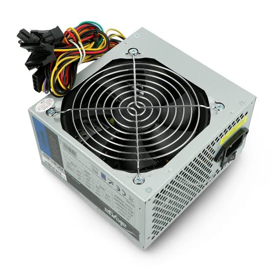
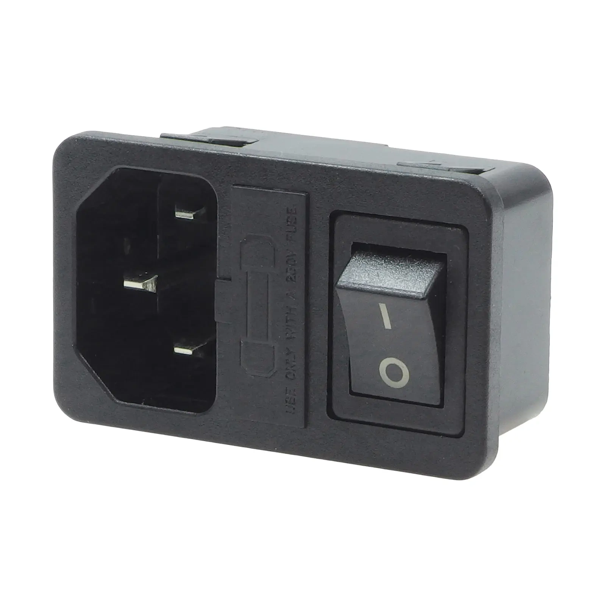
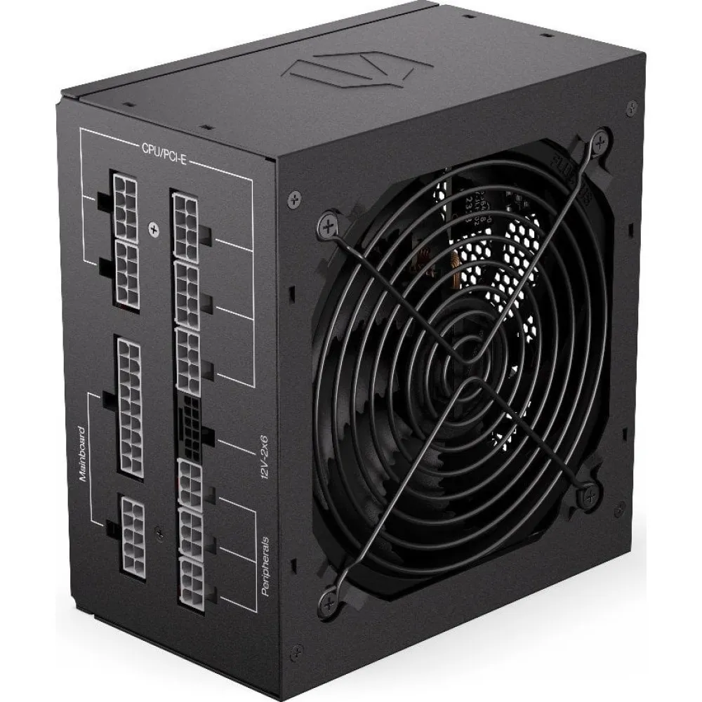
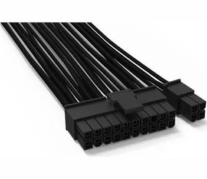

Zasilacz komputerowy (Power Supply Unit – PSU) to serce układu zasilania komputera. Odpowiada za pobieranie prądu przemiennego z gniazdka elektrycznego (230V) i konwertowanie go na stabilny prąd stały o niskich napięciach (głównie 12V, 5V oraz 3.3V) wymaganych przez poszczególne podzespoły.
Wysokiej jakości zasilacz chroni delikatną elektronikę procesora, płyty głównej i karty graficznej przed przepięciami, zwarciami oraz spadkami napięcia w sieci elektrycznej, gwarantując bezpieczną i długowieczną pracę całego komputera.


Certyfikaty takie jak 80 Plus Bronze, Gold czy Platinum określają efektywność energetyczną zasilacza. Im wyższa sprawność, tym mniej energii elektrycznej jest marnowane w postaci wydzielanego ciepła.
Zasilacze modularne pozwalają na odłączenie nieużywanych kabli, co znacznie ułatwia zarządzanie przewodami wewnątrz obudowy i poprawia przepływ powietrza.
Niemodularny – wszystkie przewody są zamontowane na stałe.
Półmodularny – część przewodów można odłączyć.
Modularny – można odłączać większość lub wszystkie przewody.

